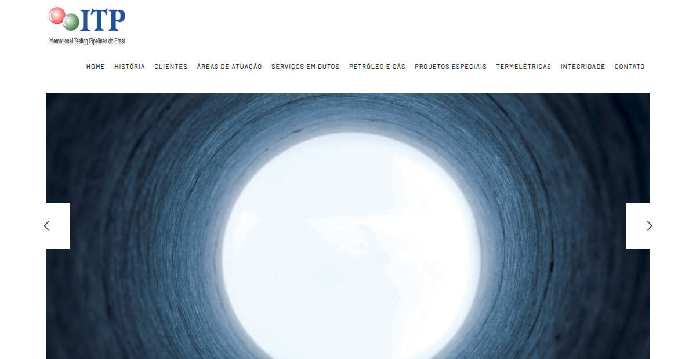
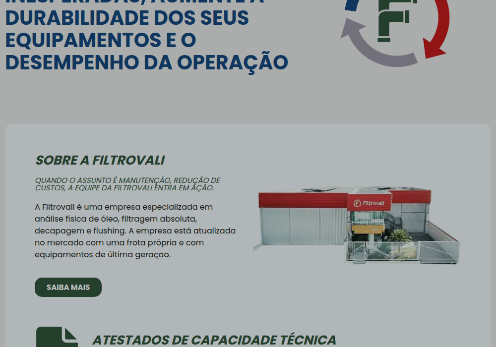
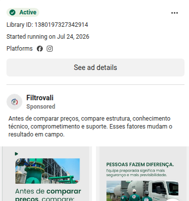

Auditoria de aquisição digital — mercado, concorrência, SEO, CRO, Meta Ads e Google Ads. Baseado em evidência pública e em dado real de performance das contas de mídia.
Desde 15/07/2026 o Google Ads não registra uma única conversão, mesmo ativo e gastando normalmente — cerca de R$ 3.000 investidos em quatro estruturas de campanha diferentes, todas zeradas. Esse padrão (zero persistente mesmo trocando campanha e palavra-chave) é mais compatível com uma falha de rastreamento de conversão do que só com tráfego errado — ver seção 06.
Fonte: site oficial navegado via Chromium headless, certificados verificados na página interna do site, pesquisa pública de mercado.
O Certificado de Registro Cadastral (CRC) da Petrobras e a certificação ISO 9001 (Fundação Vanzolini) estão publicados no site — um selo de confiança forte para o setor de óleo e gás que nenhum dos três concorrentes analisados demonstra com o mesmo destaque.
"Térmico" é lido pelo público leigo como climatização, e por buscadores como tratamento térmico metalúrgico (têmpera, recozimento) — um segmento diferente do core da empresa (alívio de tensões pós-solda). Confirmado com dado real de busca no módulo de Google Ads (seção 05).
Atende óleo & gás, petroquímica, naval, siderurgia, mineração, papel e celulose, usinas. Clientes com logo no site incluem Usiminas e MAN. Mercado de óleo e gás no Brasil projetado de US$ 22,76 bi (2025) a US$ 28,82 bi (2031); Petrobras alocou US$ 77,3 bi em capex de E&P para 2025–2029 (Mordor Intelligence, Deloitte Brasil).
Três concorrentes validados por sobreposição de portfólio, mídia ativa verificada (Meta Ad Library por page ID e Google Ads Transparency Center) e porte declarado. Revisão de 25/09 aprofundou site e Instagram de Filtrovali e ITP Brasil.
| Critério | Point Thermic | Filtrovali | Hydratight BR | ITP Brasil |
|---|---|---|---|---|
| Meta Ads ativo | Sim | Sim (3 anúncios) | Não detectado | Não detectado |
| Google Ads ativo | Sim | Sim (46 anúncios) | Não detectado | Não detectado |
| Meta description no site | Ausente | Presente | Presente | Duplicada |
| Dado estruturado (JSON-LD) | Ausente | Presente | Ausente | Ausente |
| Cadastro Petrobras (CRC) + ONIP | Sim — PDF do certificado publicado | Não observado | Não observado | Sim — só citado em texto, sem documento publicado |
| Escala declarada | Não comunica número | +700 projetos, desde 2005 | 35 sedes, 1.000 pessoas (global) | 5.000 km de dutos comissionados |
| Não auditável nesta sessão | 5.994 seguidores (bio pública) | Não observado | Indexado, sem sinal de bio/engajamento forte |
Levantamento mais profundo do site da ITP Brasil mostra que ela também é cadastrada na ONIP e possui CRC na Petrobras, citando a estatal entre seus clientes de projetos complexos. A diferença real está na prova: a Point Thermic publica o documento do certificado (ainda que mal apresentado, ver seção 04); a ITP Brasil apenas afirma o cadastro em texto corrido, sem anexar o documento. É uma vantagem de forma, não de exclusividade de conteúdo.
O site lista páginas dedicadas de Limpeza Química, Descontaminação Química, Flushing/Hot Oil Flushing, Testes Hidrostáticos e Retrolavagem Industrial — sobreposição quase completa com os quatro serviços centrais da Point Thermic — além de torqueamento, gerenciamento de flanges e geração de nitrogênio. Nível de concorrência revisado de médio para alto.
As duas contas existem e são reais (confirmado por indexação do Google), mas o navegador automatizado desta sessão é bloqueado pelo Instagram nas duas. Via trecho de busca pública: a bio da Filtrovali (@filtrovali) comunica "mais de 20 anos de experiência" e "mais de 700 projetos concluídos" para 5.994 seguidores — prova social ativa e quantificada que nenhuma das quatro empresas analisadas usa no próprio site com a mesma força. A ITP Brasil (@itp_brasil) está indexada, mas sem bio ou métrica capturável por busca — sinal indireto de conta menos otimizada, coerente com o restante do diagnóstico digital da empresa.
A Filtrovali segue a concorrente mais madura digitalmente: mídia paga ativa e simultânea nos dois canais, copy consultivo, CTA direto ao WhatsApp e prova social numérica na bio do Instagram. A ITP Brasil é a ameaça estrutural mais subestimada na primeira leitura: portfólio quase idêntico e mesmo selo Petrobras/ONIP, mas convertido em pouco resultado digital por um site tecnicamente datado.
Análise visual direta das páginas e da Biblioteca de Anúncios (não apenas do texto).



A home é, na prática, uma única fotografia (visual quase editorial, tom azulado, textura industrial) em carrossel, com a barra de navegação por cima — sem headline, sem subheadline, sem CTA, sem prova social visível na primeira dobra. É consistente com o posicionamento de "40 anos, herança internacional" (módulo 00), mas custa caro em conversão: o visitante precisa navegar ativamente até uma página interna para encontrar qualquer motivo de contratar ou qualquer forma de pedir orçamento.
O mesmo ângulo aparece no site (foto real da sede, atestados de capacidade técnica, grade organizada de 9 serviços) e no anúncio pago (carrossel "antes de comparar preços, compare estrutura" sobre foto real de equipamento em campo, não banco de imagens). É uma marca que decidiu vender prova física de estrutura como diferencial, e repete esse ângulo em todo canal — o oposto do vazio da ITP Brasil e mais consistente que a própria Point Thermic, cuja copy paga (módulo 05) não usa nenhuma prova visual equivalente.
A copy paga é forte em texto (módulo 05), mas os criativos partem de imagens genéricas de trabalhador em EPI, não de prova física de estrutura, obra ou equipamento como a Filtrovali faz. E o único elemento visual dedicado da home é a caixa vazia identificada no módulo de CRO — o oposto exato da vitrine de sede/equipamento que a Filtrovali usa como argumento central.
Home, Serviços, Sobre, Clientes e Blog não têm meta description. O Google gera o trecho de busca automaticamente, sem controle de mensagem.
É o rótulo do formulário de rodapé, reaproveitado como H1 em todo o site. Nenhuma página tem um H1 que descreva seu próprio conteúdo.
Uma busca por site:pointthermic.com.br retorna páginas de uma estrutura anterior (ex: /tratamento-termico-alivio-tensao) que hoje redirecionam para o domínio certo e então quebram em 404 — equity de SEO já conquistada está sendo perdida.
A seção existe na navegação principal desde 2023 ("Nosso blog oferece informações atualizadas...") mas nunca recebeu conteúdo — janela de captura de busca técnica de cauda longa hoje completamente fechada.
O ativo de credibilidade mais forte da empresa aparece só na página interna de Certificados, como documento PDF cru — não como selo visual na home, onde faria o trabalho de conversão.
Uma caixa com borda laranja vazia aparece ao lado do título principal, em desktop e mobile — confirmado por captura de tela. É o primeiro elemento visual prometido ao visitante, e entrega um vazio.
O link já existe no rodapé (ícone, sem texto). Não há botão fixo com chamada explícita — no padrão que a concorrente Filtrovali já usa em seus próprios anúncios.
Pede nome completo, telefone, e-mail empresarial, assunto e mensagem — qualificação adequada para o ticket do serviço. O texto do botão é genérico e não há indicação de prazo de resposta.
Conta 835382558026652 · 01/03 a 25/09/2026 · investimento total R$ 10.365,22 · canal ativo, com campanhas correndo até a data deste laudo
Um post do Instagram sobre um evento de paella foi promovido como anúncio, consumindo R$ 49,76 em verba fora do escopo do negócio — falha de governança na aprovação de impulsionamento.
"V4 I LEADS I WhatsApp" tem "LEADS" no nome mas está de fato otimizada para Engajamento, não Geração de Cadastros — nome e configuração real divergem.
A maioria dos anúncios ativos usa a mesma dor bem construída: continuidade operacional + laudo técnico certificado + segmentação setorial explícita."Seu projeto não pode parar por falta de um parceiro técnico confiável. Realizamos Tratamento Térmico, Limpeza Química, Flushing e Descontaminação Industrial, com Laudo Técnico Certificado [...]"
Ao contrário do Google Ads (seção 06), nenhum anúncio do Meta cita a certificação ISO 9001 ou o cadastro Petrobras.
Entre 10 e 24/09, três campanhas novas promoveram a participação da Point Thermic na ROG.e 2026 (Riocentro, estande J44, pavilhão 3) — incluindo posts de recapitulação diária impulsionados ("Segundo dia de ROG.e 2026 encerrado, com muitas conversas técnicas sobre integridade de ativos no nosso estande"). É o primeiro conteúdo de bastidores/prova social em tempo real identificado em toda a análise, e mostra um tipo de ativação (feira setorial) que nenhum concorrente analisado demonstrou explorar digitalmente.
Campanha lançada em 10/09 (R$ 236 até 25/09) promove equipamento próprio com acesso remoto, monitoramento digital e relatórios — diversificação de venda de serviço para venda/locação de equipamento com tecnologia embarcada.
Conta 761-300-6526 · 01/03 a 25/09/2026 · investimento total R$ 7.492,04 · canal ativo, com campanhas novas desde 04/09
Campanha "Search I CPC I Auto I Tratamento Termico" — a mais eficiente da conta
*Recozimento e Normalização: R$ 248 é o custo de uma única conversão (n=1) — amostra pequena demais para julgar eficiência real. Serviço confirmado como real pela landing page dedicada (achado abaixo); a leitura anterior deste laudo, que classificava esse grupo como erro de segmentação, foi corrigida.
Achado anterior deste laudo classificava o grupo "Recozimento e Normalização" como fora do portfólio da empresa. A landing page usada para Google Ads (lp.pointthermic.com.br, não avaliada na primeira passada) mostra que não é engano: a Point Thermic trata Alívio de Tensão, Recozimento e Normalização como três linhas de serviço paralelas, com FAQ técnico dedicado a cada uma e até um campo no formulário para escolher entre tratamento "Forno" ou "Localizado" — ou seja, a empresa tem capacidade de forno além do tratamento localizado, o que não aparece no site institucional principal. O grupo de anúncio está correto; o problema é outro (ver abaixo).
Termos de pesquisa reais que geraram clique incluem, ao lado de buscas legítimas de recozimento/normalização, consultas sem relação com nenhum dos três serviços da própria LP:
"empresa que limpa piso encardido" · "empresas de tratamento de água" · "têmpera por indução"**Têmpera por indução é um quarto processo de tratamento térmico (endurecimento), não listado na landing page nem em nenhuma página do site — continua sendo candidato genuíno a termo negativo, diferente de "recozimento" e "normalização".
"[Search] Tratamento térmico" e "[Search] Limpeza Quimica" substituíram, em 16/07, a campanha historicamente mais eficiente da conta (R$ 68,94/conversão) e não converteram nada até hoje. Em 04/09 a conta trocou de novo, para "Search- 04/09" e "Performance Max- 04/09 L.Q." — juntas já somam R$ 511 e 1.728 cliques em setembro, e também zero conversão. Quatro estruturas de campanha diferentes, todas zeradas, é um padrão mais coerente com uma falha de rastreamento do que com tráfego mal segmentado — reforçado pelo que a inspeção da própria landing page mostrou (achado abaixo).
O formulário de lp.pointthermic.com.br envia via method="get" para a própria URL da página (não para uma página de agradecimento dedicada). A ferramenta usada para montar a página (padrão de classes "gpc-e" / "gpc_campos", consistente com Great Pages) normalmente processa o envio por JavaScript, então isso não impede o lead de ser capturado — mas se a conversão do Google Ads estiver configurada para disparar na visita a uma URL de obrigado específica, e essa URL nunca é alcançada, a conversão nunca é registrada, mesmo com formulário funcionando. É a hipótese mais direta e barata de testar antes de qualquer correção de palavra-chave: enviar um lead de teste e conferir, no Gerenciador de Tags e no Google Ads, se o evento de conversão dispara.
Vídeo incorporado no topo (provavelmente YouTube) exibe "This content isn't available" em vez de tocar. A seção "Principais Diferenciais Técnicos" tem pelo menos três blocos com espaço reservado vazio, sem ícone nem imagem. A seção "Quem já escolheu a Point Thermic" — o espaço reservado para prova social de clientes — está vazia, sem logos nem depoimentos. É o mesmo padrão de elementos quebrados/vazios já identificado na home do site institucional (módulo de CRO), agora também na página que efetivamente recebe o clique pago do Google.
Selo de segurança e prazo de resposta acima da dobra ("🔒 Seus dados estão seguro | ⚡ Resposta em até 24h úteis"), FAQ real tratando objeção de prazo, urgência, diferença técnica entre serviços e conformidade normativa (ASME/ASTM), e segmentação clara por setor (Metalúrgica, Automotiva, Aeroespacial, Petróleo e Gás, Construção). São exatamente as lacunas de conteúdo de suporte à decisão apontadas no módulo de CRO do site principal — a agência já sabe fazer isso, só não está no site institucional.
O site roda três contêineres GTM distintos (identificado no módulo de contexto) — configuração propensa a conflito. Verificar no Google Ads se o evento de conversão está disparando na thank-you page atual antes de investir mais em correção de palavra-chave.
"Alívio de Tensões" cita normas ASME/ASTM e nomeia vasos de pressão — copy tecnicamente precisa, e não por acaso o melhor custo por conversão de toda a conta (R$ 41).
Ao contrário do Meta Ads, os headlines de Limpeza Química já citam "Certificação NBR ISO 9001:2015" e "Registro ONIP Setor Petróleo" — inconsistência de canal a corrigir na direção oposta à do Meta.
Sem Google Keyword Planner conectado (exige login do cliente) — sem volume/CPC de ferramenta. Clusters montados a partir da landing page (lp.pointthermic.com.br), do FAQ dela e dos termos de pesquisa reais já observados na conta.
| Cluster | Termos | Intenção | Situação hoje | Ação recomendada |
|---|---|---|---|---|
| Core — Alívio de Tensão | alívio de tensão pós-solda, alívio de tensão localizado, tratamento térmico de alívio de tensões, PWHT | C | Já converte (R$ 41/conv.) | Aumentar lance e orçamento — é o cluster mais eficiente da conta |
| Core — Recozimento | recozimento de aço, recozimento industrial, tratamento térmico recozimento, recozimento para usinagem | C | Real, mas pouco dado (n=1 conv.) | Manter e medir por mais 30 dias antes de decidir — não é erro, é amostra pequena |
| Core — Normalização | normalização de aço, normalização tratamento térmico, normalização de peças metálicas | C | Real, agrupado com Recozimento nos dados | Separar em grupo de anúncio próprio para medir CPA isoladamente |
| Setor | tratamento térmico aeroespacial, tratamento térmico automotivo, tratamento térmico petróleo e gás, tratamento térmico siderúrgica | C | Não identificado nos termos reais coletados | Testar — a LP já segmenta por esses 5 setores, mas os anúncios de Search não usam o termo do setor no texto |
| Dor / problema | peça rachou após solda, trinca após soldagem, deformação após solda, tensão residual em peça soldada | C/I | Não identificado nos termos reais coletados | Cauda longa de alta intenção — a própria LP já responde essa dor ("Evite Prejuízos"); criar anúncio espelhando essa seção |
| Normas / compliance | tratamento térmico ASME, tratamento térmico ASTM, laudo tratamento térmico, certificado tratamento térmico | C | Não identificado nos termos reais coletados | Alta intenção B2B (comprador técnico buscando conformidade) — testar como grupo dedicado |
| Negativo confirmado | têmpera por indução, têmpera e revenimento, empresa que limpa piso encardido, empresas de tratamento de água, produto de limpeza desengraxante | — | Gerando clique e gasto sem relação com nenhum serviço da LP | Adicionar como termo negativo agora — zero ambiguidade sobre esses |
Nota sobre "têmpera": é um quarto processo de tratamento térmico (endurecimento), diferente dos três oferecidos na LP (alívio de tensão, recozimento, normalização) — ao contrário do que o achado anterior deste laudo sugeria, "recozimento" e "normalização" não são termos a excluir, mas "têmpera" segue sendo candidato real a negativo, a menos que a empresa também preste esse serviço em outro canal não identificado nesta análise.
72 dias e quatro estruturas de campanha diferentes com zero conversão é mais compatível com rastreamento quebrado do que com tráfego ruim — a conta está ativa e gastando normalmente.
Formulário GET sem página de obrigado visível é a hipótese mais barata e direta para os 72 dias de zero conversão — testar antes de mexer em palavra-chave ou orçamento.
Reduz desperdício direto nas campanhas de Search sem custo adicional de mídia.
Ajustes técnicos de template, sem produção de conteúdo — base necessária para qualquer ganho orgânico.
Ativo de credibilidade único no mercado analisado, hoje enterrado num PDF.
Vídeo "indisponível" no topo, ícones ausentes nos diferenciais técnicos e seção de clientes vazia — na página que recebe o clique pago, não numa página secundária.
Elemento visual quebrado no espaço mais nobre da página, em desktop e mobile.
Número já existe no site; falta um caminho de conversão de baixa fricção mais visível.
Hoje tudo em uma única página — limita SEO de cauda longa e message match dos anúncios.
Seção existe desde 2023, indexada e vazia — nenhum concorrente analisado ocupa esse espaço hoje.
Pixel instalado, mas nenhuma audiência de remarketing configurada até o momento.